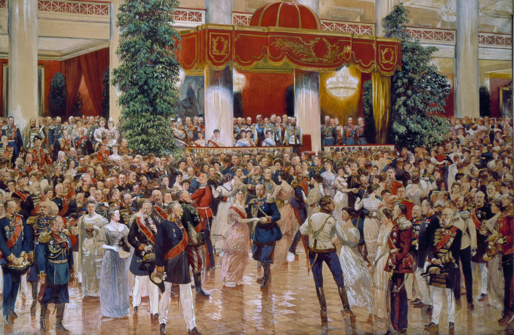
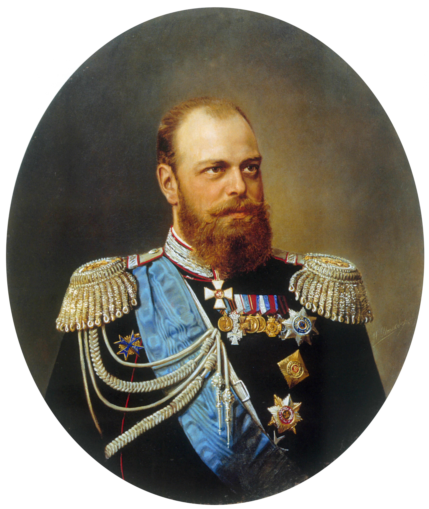
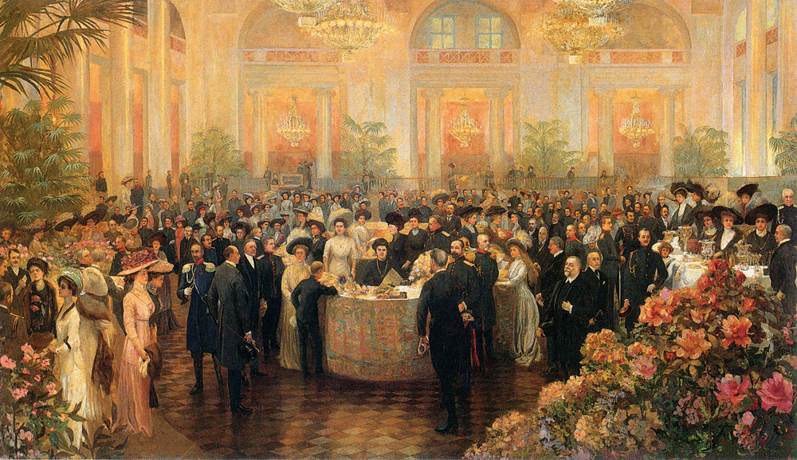
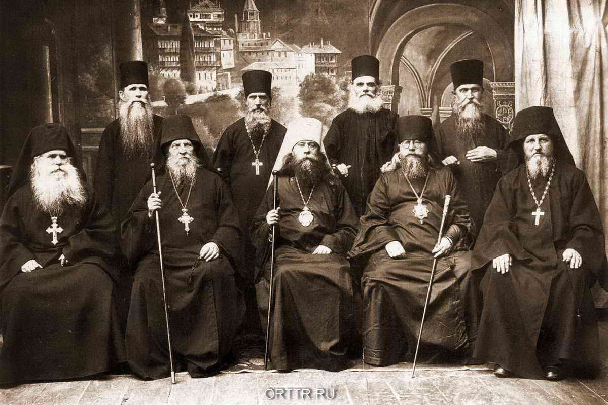
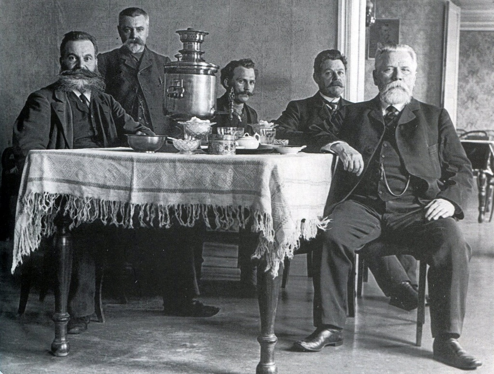
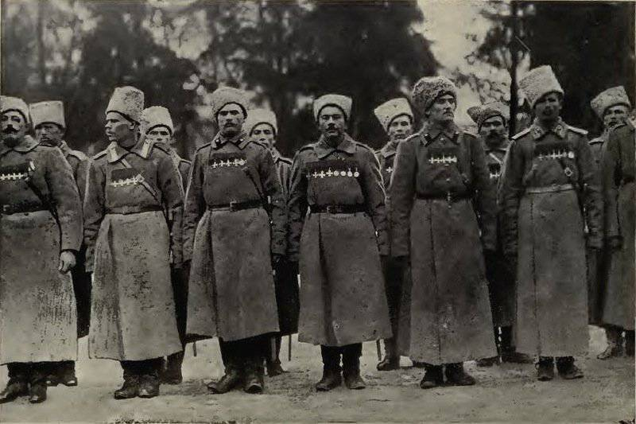
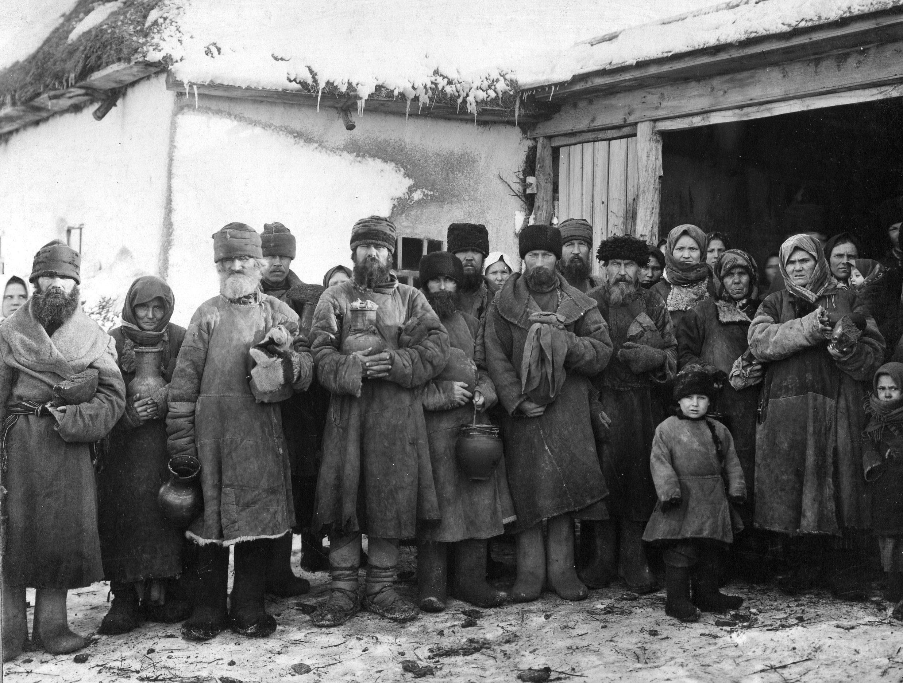
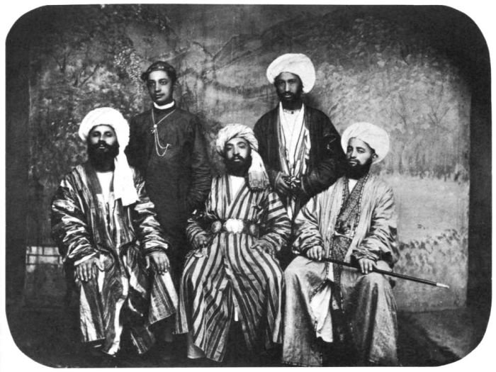

Население
По всеобщей переписи 1897 года население составляло 129,2 млн человек. Распределение населения по территориям было следующим: Европейская Россия — 94 244,1 тыс. чел., Польша — 9456,1 тыс. чел., Кавказ — 9354,8 тыс. чел., Сибирь — 5784,5 тыс. чел., Средняя Азия — 7747,1 тыс. чел., Финляндия — 2555,5 тыс. человек.
Данные на 1914 являются приблизительными: по данным Центрального статистического комитета МВД население империи, без Финляндии, составляло 175 137 800, в то время как, по данным Управления Главного Врачебного инспектора МВД, основанным на статистике рождений и смертей — 166 650 000.
Сословия:
Дворяне
Дворянство организовано в соответствии с Табелью о рангах. Они обязаны нести гражданскую или военную службу и лишь выслугой лет повышать ранг. До 1785 года дворянин обязан отслужить в гвардии (своеобразная военная школа), а затем стать офицером. Гвардейцы становятся главной силой ряда дворцовых переворотов.

В период 1861—1917 гг. дворяне постепенно теряют свою экономическую роль, бо́льшая часть пригодной для сельского хозяйства земли переходит в собственность крестьянских общин (тогда как ранее не дворянам было даже запрещено владеть землёй). Более того, реформы права собственности 1860-х гг. подразумевали социо-экономические реформы, по которым Российское правительство утвердила бы свою позицию в сфере права собственности и её защиты. Дворяне также теряют своё традиционное для XVIII—XIX веков численное преобладание среди офицеров и госслужащих.
Императорская фамилия
В XVII веке титулами российских монархов были «царь», «великий князь», «самодержец». С провозглашением империи в 1721 основным титулом становится «император».
Титулы императорской фамилии окончательно утверждаются в 1797 году. Согласно специальному закону, монарх России именовался «императором», его жена — «императрицей», мать — «вдовствующей императрицей». Сыновья, дочери, внуки, правнуки и праправнуки здравствующего или умершего императора именовались «великими князьями», а более дальние родственники императора — «князьями императорской крови». Наследник престола носил титул «цесаревич».

Принадлежность к императорской фамилии давала очень серьёзные льготы: с 5 апреля 1797 года великие князья при крещении, а князья императорской крови при совершеннолетии получали высший в империи орден Андрея Первозванного, что автоматически означало чин III класса (генеральский) по Табели о рангах. Кроме того, они получали доходы от удельных земель, принадлежавших непосредственно императорской фамилии.
Отдельные статьи Уголовного Уложения относились к царствующей семье; согласно ст. 99, посягательство на жизнь, свободу и неприкосновенность императора, императрицы и наследника, лишение или ограничение его власти наказывались смертной казнью; существовало также наказание за оскорбление величества, доходившие от каторги до административного ареста «в случае, когда заочные оскорбления учинены по неразумию, невежеству или в состоянии опьянения».
В личной собственности императора и императорской фамилии находились «кабинетные» земли, ведавшиеся Кабинетом Его Величества и находившиеся в Забайкалье, на Алтае и Польше, «удельные» земли, ведавшиеся Департаментом Уделов, некоторые горнодобывающие предприятия, фарфоровый и стеклянный заводы, гранильная фабрика. С 1763 года в собственность Кабинета начал поступать сбор ясака (налога пушниной) с коренных нерусских народностей Сибири. На начало XX века в собственности Кабинета находилась золотодобыча в Нерчинском горном округе.
Высшее дворянство
В допетровской Московской Руси единственным аристократическим титулом был титул «князь». Этот традиционный русский титул обозначал, что предки князя когда-то правили какой-либо частью России.
После заключения в 1783 году Георгиевского трактата о переходе Грузии под протекторат Российской империи грузинское дворянство было включено в систему российского с титулами князей. Допускались также пожалования в князья татарской и мордовской знати, перешедшей в православие.

При Петре I в России появляются иностранные титулы, в первую очередь — «барон» и «граф». Источников их появления было несколько: во-первых, Пётр I присоединил новые территории; проживавшая на них местная знать уже имела такие титулы. Во-вторых, в России появилось множество иностранцев, ряд которых также уже имел титулы.
Третьим источником иностранных титулов стали пожалования русских аристократов титулами князей и графов Священной Римской империи. Эти титулы присваивались по ходатайству российского монарха германским императором, и разделялись на «действительные» или «владетельные» (требовавшие наличия земель в империи) и «титулярные». Все русские носители римско-имперских титулов принадлежали к последней категории.
Духовенство
Здесь рассматривается духовенство православной церкви, составлявшее отдельное сословие с наследственным характером гражданских прав и преимуществ.
Высший орган церковного управления — Святейший Правительствующий Синод, члены которого до 1901 года при вступлении в должность должны были приносить присягу, которая, в частности, гласила:
« <…>И при томъ по крайней мѣрѣ старатися споспѣшествовать все, что къ Его Царскаго Величества вѣрной службѣ и пользѣ во всякихъ случаяхъ касатися можетъ. О ущербѣ же Его Величества интереса, вредѣ и убыткѣ, какъ скоро о томъ увѣдаю, нетокмо благовременно объявлять, но и всякими мѣрами отвращать, и не допущать тщатися буду. Когда же къ службѣ и пользѣ Его Величества, или церковной, какое тайное дѣло, или какое бы оное ни было, которое приказано мнѣ будетъ тайно содержать; и то содержать въ совершенной тайнѣ, и никому не объявлять, кому о томъ вѣдати не надлежитъ, и не будетъ повелѣно объявлять. Исповѣдую же с клятвою крайняго Судію Духовныя сея Коллегіи, быти Самаго Всероссійскаго Монарха Государя Нашего Всемилостивѣйшаго.
— Регламент или устав Духовной коллегии от 25 января 1721 г.
»

Духовенство разделяется на белое (женатое на приходах) и чёрное (монашествующее); священнослужителей и церковнослужителей. Духовенство стало привилегированным сословием, освобождённым от подушной подати и рекрутской повинности. В 1722—1867 годах в белом духовенстве преобладает наследование мест служения: по указу 1722 года церковные места делаются собственностью семьи и переходят по наследству.
Портрет протодиакона, Илья Репин
В течение XVIII века верховная власть принимает ряд актов, направленных на ограничение экономической деятельности духовенства, в первую очередь монастырей и ограничение числа монашествующих. Реформа 1764 года все имения Святейшего Синода, монастырей, приходов и епархиальных кафедр передаёт государственной Коллегии экономии, количество монастырей и их насельников резко сокращается и впредь жёстко ограничивается. К 1801 году монашествующие священнослужители, а к 1811 и простые монахи свободны от телесного наказания.
Общая численность в 1897 году (включая женщин и детей) 589 000 человек; на 1908 год — 177 000 человек (48 000 священников, 59 000 прочего белого духовенства, 17 000 монашествующих мужского пола и 53 000 женского).
Купечество
Купеческое сословие последний раз преобразовывается Петром I. Сословие делится на три купеческих гильдии и «подлых людей». Принадлежность к гильдии определяется размером капитала. Целью разделения была интеграция в имперскую структуру. Жалованная грамота городам предоставляет купцам монополию на торговлю, освобождая их от подушной подати и рекрутской повинности. Купцы играют важную роль в городском самоуправлении (после реформ Александра II). К 1917 году в сословии 240 тыс. человек, при этом занятия купцов разнятся от торговли до золотодобычи и промышленности. Купечество было упразднено большевиками 11 (23) ноября 1917 года вместе с остальными сословиями. Купцы разных гильдий могли: первой: владеть морскими судами и торговать за границей; второй: владеть речными судами; первой и второй: владеть фабриками и заводами; третьей: вести мелочную торговлю, содержать трактиры, постоялые дворы и заниматься ремеслом. Вступивший в сословие получал купеческое свидетельство. Не уплатившие ежегодных пошлин выбывали в сословие мещан. Признание купца банкротом отменяло право торговать и все сословные привилегии. Впоследствии, границы сословия размываются: часть купцов — мещане, часть получает титулы и считаются дворянами.

Индустриализация усиливает купцов, с появлением прогрессивной партии, они выражают интересы через неё. Один из лидеров П. П. Рябушинский в 1912 году прямо заявляет: «пора купечеству стать первенствующим сословием вместо выродившихся дворняжек». Однако политической силы сословие не имело.
Казачество
Здесь описано казачество, как группа населения. Казачество, как военная сила, описано в разделе «Вооружённые силы».
Во главе казачьих военно-административных образований были атаманы, утверждаемые царём (позже назначаемые). Войска подчиняются Казачьему отделу Главного штаба Военного министерства. Казаки играют заметную роль в бунтах и переворотах со времён Смутного времени, но иногда восстают сами: восстание Степана Разина, восстание Болотникова, Булавинское восстание, Пугачёвщина.
Несмотря на попытки Петра I, надёжной опорой государства казаки становятся только к XIX веку. Указом Павла I от 22 сентября (4 октября) 1798 года донские казачьи чины включены в Табель о рангах и получают право потомственного дворянства. Позже внедрено для других казаков. Казаки дворянского сословия получают право владеть крепостными, что приводит к появлению иногородних и малороссийских крестьян.

Казаки часто переформировываются и переселяются, притом не всегда добровольно. На начало XX века в России было 11 казачьих войск численностью около 3 млн человек, а самое крупное из них — Войско Донское — 1 млн человек.
Крестьяне
Крестьяне составляли 80 % населения империи. Крестьяне в разное время делились на вольных, крепостных, государственных крестьян и батраков. Государственных могли иногда массово раздавать в крепостничество. В 1900 году в России 22 млн крестьянских дворов. С началом Первой мировой войны миллионы крестьян мобилизованы в армию, что создало нехватку рабочих рук. К 1905 году крестьяне общинно или единолично владеют 61,8 % частновладельческой земли, к 1916 году эта доля доходит до 90 %. На начало XX века большинство крестьян были неграмотны. В России происходил ряд бунтов: в 1902, 1905, 1907 годах
Великороссияне разных губерний (Густав-Теодор Паули. «Этнографическое описание народов России», СПб. 1862)
Права крепостных защищал сначала Манифест о трёхдневной барщине, а затем отмена крепостного права. Крепостных использовали в искусстве, например крепостной театр.
Крестьяне объединялись в Сельское общество, а они в волость, вели там натуральное хозяйство. Община выплачивала круговую поруку. Одной из проблем деревень была «чересполосица». До 1906 года при уходе из общины, земля крестьянина оставалась в ней, после при выходе она могла оформиться в личную собственность («отруб»). Против этих общин государство боролось поощрением переселения крестьян в Западную Сибирь, Дальний Восток, Туркестанское и Степное генерал-губернаторства, а также привлечением их в города на заработки, что, наряду со Столыпинской аграрной реформой было призвано решить земельный вопрос.

Надежды на решение основной проблемы начала XX века — земельного вопроса, даёт идея чёрного передела
Инородцы
Инородцы были особой категорией подданных в рамках права Российской империи. «Устав об управлении инородцев» разделял инородцев на «оседлых», «кочевых» и «бродячих» и согласно этому разделению определял их административный и правовой статус. На горцев Кавказа и инородческое население Закаспийской области (туркменов) распространялось так называемое военно-народное управление.
Согласно «Своду законов о состояниях» (ст. 762) инородцы подразделялись на:
сибирских инородцев;
самоедов Архангельской, кочевых инородцев и калмыков Ставропольской, и калмыков, кочующих в Астраханской и Ставропольской губерниях;
киргизов Внутренней Орды;
инородцев Акмолинской, Семипалатинской, Семиреченской, Уральской, Закаспийской и Тургайской областей;
инородцев Туркестанского края;
горцев Кавказа;
евреев.
Иностранцы
Появление в Российской империи иностранцев, главным образом — из Западной Европы, — начинается ещё во времена Московской Руси, нуждавшейся в иностранных военных специалистах для организации «полков иноземного строя». С началом реформ Петра I миграция иностранцев становится массовой. По состоянию на начало XX века иностранец, желающий поступить в российское подданство, должен был сначала пройти «водворение». Вновь прибывший подавал прошение на имя местного губернатора о целях водворения и роде своих занятий, затем подавалось прошение на имя министра внутренних дел о принятии в российское подданство, причём был запрещён приём без принятия православия иудеев и дервишей. Кроме того, любой въезд в Российскую империю евреев и иезуитов мог проводиться только с особого разрешения министров иностранных дел, внутренних дел и финансов.

По истечении пятилетнего «водворения» иностранец мог получить подданство по «укоренению» (натурализации), и получить полные права, например, право вступать в купеческие гильдии, приобретать недвижимость. Иностранцы, не получившие российского подданства, могли поступать на госслужбу, но только «по учебной части», по горному делу.